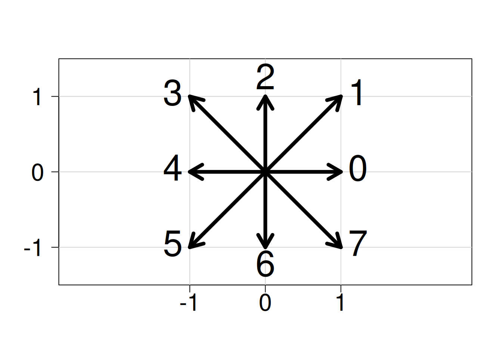

Code
plot(
0,
0,
xlim = c(-1.5, 1.5),
ylim = c(-1.5, 1.5),
type = "n",
xlab = "",
ylab = "",
xaxt = "n",
yaxt = "n",
asp = 1,
xaxs = "i",
yaxs = "i"
)
axis(1, at = c(-1, 0, 1), cex.axis = 2)
axis(2, at = c(-1, 0, 1), las = 1, cex.axis = 2)
# グリッド線を引く
abline(h = -1:1, col = "lightgray")
abline(v = -1:1, col = "lightgray")
# ベクトルを描く
length_arrow <- 0.2
lwd_arrow <- 5
arrows(0, 0, 1, 0, length = length_arrow, lwd = lwd_arrow) # 0
arrows(0, 0, 1, 1, length = length_arrow, lwd = lwd_arrow) # 1
arrows(0, 0, 0, 1, length = length_arrow, lwd = lwd_arrow) # 2
arrows(0, 0, -1, 1, length = length_arrow, lwd = lwd_arrow) # 3
arrows(0, 0, -1, 0, length = length_arrow, lwd = lwd_arrow) # 4
arrows(0, 0, -1, -1, length = length_arrow, lwd = lwd_arrow) # 5
arrows(0, 0, 0, -1, length = length_arrow, lwd = lwd_arrow) # 6
arrows(0, 0, 1, -1, length = length_arrow, lwd = lwd_arrow) # 7
# ラベルをつける
cex_text <- 3
text(1, 0, "0", cex = cex_text, pos = 4)
text(1, 1, "1", cex = cex_text, pos = 4)
text(0, 1, "2", cex = cex_text, pos = 3)
text(-1, 1, "3", cex = cex_text, pos = 2)
text(-1, 0, "4", cex = cex_text, pos = 2)
text(-1, -1, "5", cex = cex_text, pos = 2)
text(0, -1, "6", cex = cex_text, pos = 1)
text(1, -1, "7", cex = cex_text, pos = 4)